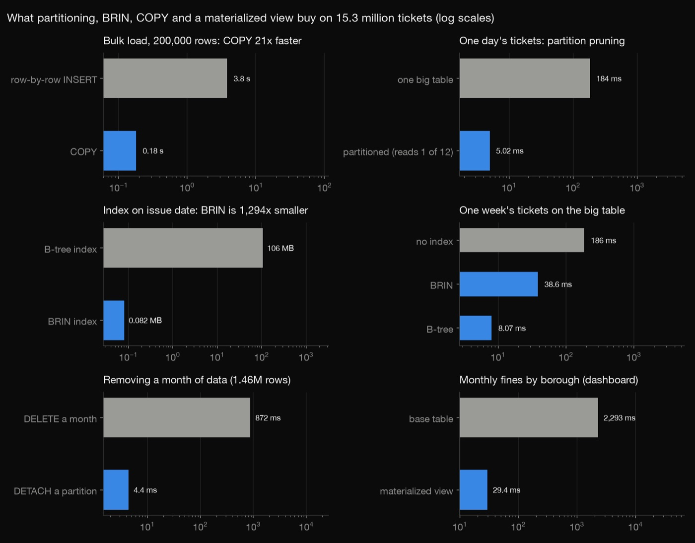
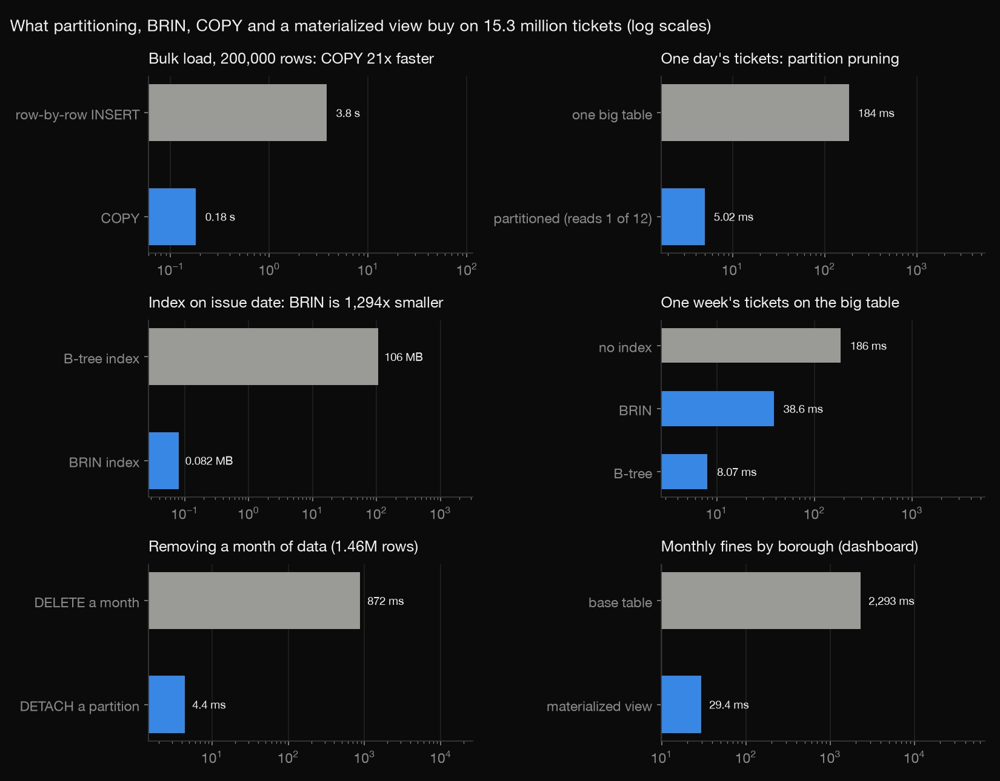
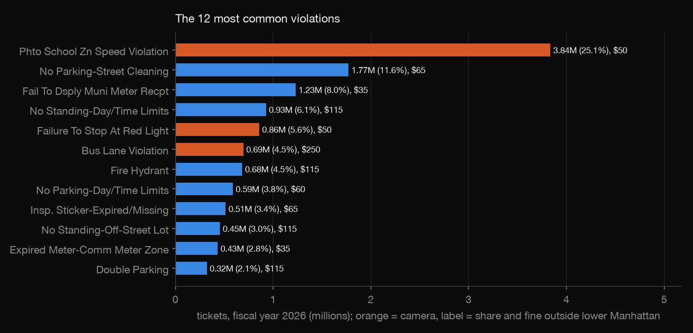
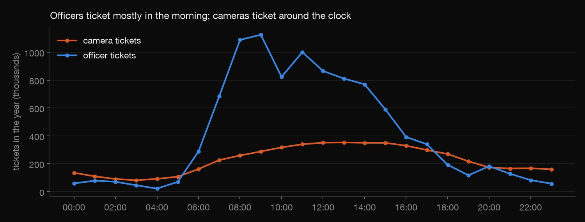
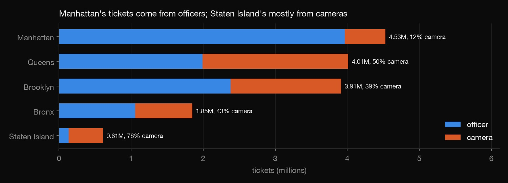

SQL · Database management · 2026-10
15 Million Parking Tickets in PostgreSQL
A year of New York City parking and camera tickets in a monthly-partitioned PostgreSQL database, with the database-administration choices that matter at scale measured rather than asserted.

Plate numbers are never downloaded. Fines are face value as issued, not money collected; payments and dismissals live in a different city dataset.
01 — The problem
New York issues about 15 million parking and camera tickets a year, and the Department of Finance's analysts need answers like "fines by borough this month" in seconds, not minutes. At that size, how the database is built decides whether that's possible. Which design choices (partitioning, index type, bulk loading, summaries) actually make a difference, and by how much?
02 — What I built
A PostgreSQL 18 database of the fiscal-year-2026 ticket file (15.7 million rows):
- Monthly partitions with a staging-and-transform load that logs every bad value.
- A reasoned quarantine for tickets dated outside the year.
- Benchmarks: COPY vs INSERT, partition pruning, BRIN vs B-tree, DETACH vs DELETE, parallel workers, and a materialized view.
- A read-only analyst role, and checks that every row is accounted for.
03 — How it was built
- 01
Download a year, without plate numbers
download.pyasks NYC Open Data for 13 selected columns, one file per month and three at a time, plus one file of tickets dated outside the fiscal year. Plate numbers are never requested. That's about 1.9 GB in total.jobs.append(("outside_fy", "issue_date < '2025-07-01' OR issue_date >= '2026-07-01'")) - 02
Partition by month
The ticket table is split into 12 monthly partitions. Two consequences:
- The key must include the date. A partitioned table's primary key has to include the partition column, so it's (summons number, issue date). That can't guarantee a summons number is unique across months, so
check.pyverifies that separately. - Borough names need mapping. They arrive in 13 spellings (NY, MN, K, BK, Kings…), mapped to 5 by a lookup table.
Camera tickets are identified from the data, not assumed: one agency code issues at least 99% of codes 5, 7 and 36 (bus lane, red light, school-zone speed).
) PARTITION BY RANGE (issue_date); - The key must include the date. A partitioned table's primary key has to include the partition column, so it's (summons number, issue date). That can't guarantee a summons number is unique across months, so
- 03
Load fast, and account for every row
COPYinto an UNLOGGED staging table loads all 15.7 million rows in 14 seconds. On 200,000 rows it was 21× faster than row-by-row INSERTs. 15,278,865 rows go into partitions. The other 410,883 are dated outside the year, and the quarantine says why: 403,351 are June 2025 tickets from the previous fiscal year that reached this file late. Only 1,175 have impossible future dates, up to 2068.Quarantine reason Tickets June 2025, arrived late 403,351 Before June 2025 6,020 Future date (typo) 1,175 After the year ended 337 CASE WHEN issue_date::date BETWEEN DATE '2025-06-01' AND DATE '2025-06-30' THEN 'June 2025: previous fiscal year, arrived late' - 04
Measure what each choice buys
Every comparison runs on the same data. The slow way is a single unpartitioned table, row-by-row INSERTs, DELETE, no parallel workers, or the raw table. The fast way is COPY, a partition, a BRIN index, DETACH, 4 workers, or the summary.
Test Slow Fast Load 200k rows 3.8 s 0.18 s One day's tickets 184 ms 5 ms Date index size 106 MB 0.08 MB Remove a month 872 ms 4 ms Year by borough 1,881 ms 432 ms Dashboard query 2,293 ms 29 ms BRIN stores one summary per block range, so it's 1,300× smaller than a B-tree. It works because tickets arrive in date order, though a B-tree answers a one-week query faster (8 ms vs 39 ms). The DELETE left 1.46 million dead rows, and the table stayed 1,656 MB even after VACUUM. Detaching a partition is just a metadata change.

detach_ms = ms("ALTER TABLE nyc.ticket DETACH PARTITION nyc.ticket_2025_07;") - 05
Summarise for dashboards, and lock it down
A materialized daily summary (by date, borough and violation) answers dashboard queries 78× faster. A unique index lets it refresh concurrently (2.8 s) without blocking readers. A finance-analyst role can read the summary and a view, but not the raw ticket table or staging. A view runs with its owner's rights, which makes that possible.
check.pyrecounts every row against the raw files with pandas and confirms each partition holds only its own month. It also tests the time parser's edge cases ("1205A" is 00:05) and re-proves every benchmark claim.CREATE UNIQUE INDEX ON nyc.mv_daily (issue_date, borough, violation_code); -- needed for REFRESH ... CONCURRENTLY
04 — Results
What a year of tickets says:
- 15.28 million tickets, worth $1.20–1.23 billion in fines at face value.
- 35% came from cameras. The most common ticket of all is the school-zone speed camera (3.84 million, 25%), ahead of street cleaning and unpaid meters.
- Cameras ticket around the clock and peak at weekends, while officers write most between 8 and 10 a.m. and fewest on Sundays.
- Boroughs differ: Manhattan has the most tickets and only 12% from cameras; Staten Island's are 78% camera.



05 — What I'd do next
- Join the payments dataset to measure money collected and dismissal rates.
- Automate the monthly roll-forward: add next month's partition, detach the oldest.
- Map tickets by street segment for curb-management planning.